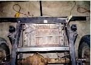
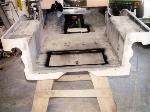

{kind=link}

By: Terry L. Howe - 2/2000
|
|
| From the back, you can see the 2"x2" angle that secures the leading edge. |
|  |
| The battery tray from above. You can see the holes that attach the leading edge and the angle iron around the bottom of the batteries. |
|
|
| Dual optimas securely fastened down in the new battery tray. Some flat black paint is the finishing touch. |
|  |
| The access door in the floor. The edges were painted before the application of Durabak. |
It is always a challenge fitting things into a flat fender; fitting a dual battery system into Project Pieces & Parts was no exception. The original location for the battery on CJ-2As is on the passenger side fender. This works fine with the 134 I4 "Go Devil" engine, but it gets pretty tight with a V8 or V6 engine. I also wanted to cut out the fenders as much as possible to keep the engine cool, so I didn't want to mount the battery or batteries on the fenders. The military Willys' have an extra battery under the cowl (behind the passenger side dash), but I wanted to put a heater in this area. I finally decided behind the rear axle would be the best place for the batteries.
Obviously, if the batteries were going behind the rear axle, they would need some protection. I got out the tape measure and discovered a CJ-7 gas tank skid plate would fit back there and, with some chopping, be level with the bottom of the rear bumper. This area is normally occupied by a brace for a PTO output. A lot of people will cut out the brace and install a 15 gallon early 70s CJ gas tank in this spot. I was going with two gas tanks under the seats, so this space was free.
I started prepping the CJ-7 gas tank skid plate by hitting it with a wire brush to remove the grime and rust. I cut off the trailing edge and drilled holes for my shackle bracket. The trailing edge attaches flush with the rear bumper, and is held on by the bolts of the shackle bracket. On the leading edge, I used a 2"x2"x1/8" piece of angle iron. I cut it to length and welded it to the frame rails and drilled it out for the holes in the leading edge of the CJ-7 gas tank skid plate.
I needed to hold the batteries in place, so I fabricated my own dual battery tray. I used some 1"x1"x1/8" angle and cut four pieces just large enough for the bottom of the two batteries. To hold the batteries down, I used a piece of 1"x1/8" C-channel and some 5/16" threaded rod. The C-channel goes across the top, and the threaded rod goes down to the angle iron around the bottom.
Wait a minute! How do you get to your batteries you ask? Since I had to replace the floor in the rear, I built a little trap door in the floor. I used a piano hinge on it and two little cabinet roller latches to hold it closed. For a handle, I used the little D-ring that used to be on the tool box under the passenger seat.
To get power up to the engine, I went to my local welding supply store and had two long cables made up to run the power from the batteries up to the firewall. On the fire wall, I have a terminal stud and a battery disconnect switch that I purchased from Wrangler Power Products. I run the power for the whole Jeep through the switch except for the winch. The reason I didn't run the winch through the switch is because it can exceed the specification for the switch.
The Wrangler Power Products catalog had a chart for selecting wire gauge size based on amperage and length of cable. According to the chart and the max pull from my winch, I needed 2/0 cable. This cable seemed excessive to me, but I went with it anyway. I needed two 20 foot sections of cable to go from the back to the firewall on the passenger side.
Since the cables were so long and they ran right along the frame rail, I decided it would be best to provide some protection for them. A piece of regular electrical conduit was purchased at my local Home Despot to run the cables through. I used my tubing bender to bend the conduit so the cables wouldn't enter and exit the conduit at sharp angles. The conduit should greatly reduce the risk of a short.
The terminals for the switch are on the engine side of the firewall and the lever for the switch is on the passenger compartment side of the firewall. Since the switch is up behind the dash, I also can use it to a kill switch to turn off all power to the Jeep for security.
{kind=link}